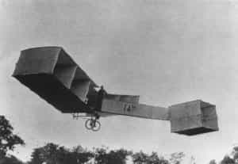
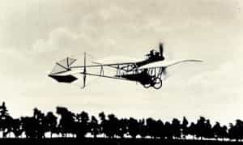

Quintus can be found at qcurtius.com. He is the author of the books On Duties, Thirty Seven, Sallust: The Conspiracy Of Catiline And The War Of Jugurtha, and other books. His work has been reviewed at Taki's Magazine. He can be followed on Twitter


I much prefer to be in a country that has a strong sense of nationalism than one which does not. One tends to respect those who respect themselves. One also tends not to respect those who have no sense of tradition, heritage, or pride in their nation’s past. Societies infected with the globalist ethic have a few things in common: excessive deference to English, obsequious worship of Americanism, and mindless parroting of liberal talking points. You get the idea. Even if the nationalism happens on occasion to make mistakes, it is still better to have that than the alternative.
The other day I visited a new museum in Rio called the “Museum of Tomorrow.” It appears to have been built to accommodate the anticipated Olympic crowds. The building itself is one of those over-engineered monstrosities that could have used some cost-cutting advice, and the displays were mostly superficial and shallow. But I did learn something of value. There was an extensive display about the Brazilian aviation pioneer Alberto Santos-Dumont.

Santos-Dumont (1873-1932) was a unique individual. Born the scion of a family of wealthy coffee growers, he used his family’s fortune to conduct researches into heavier-than-air flight. Because his father was French, he spent much of his time in France, and did pioneering work in balloons and dirigibles. It is difficult for us to appreciate it now, but at the end of the nineteenth century, flight was a subject that fascinated the entire civilized world. Many engineers and experimenters around the world were working frantically to be the first to achieve a breakthrough.
He achieved fame in October 1901 by becoming the first to make a dirigible trip around the Eiffel Tower within a certain time frame. For this feat he was awarded the Deutsch de la Meurthe prize. It was an incredible achievement for someone with no formal scientific training or background in engineering. He seemed to have an intuitive feel for machines and how best to construct them. Parisians did not quite know what to make of this exotic, energetic Brazilian man, who would fly his machines up and down the boulevards of the city.
His true moment of glory came in 1906, when he managed to pilot an actual airplane he had designed. This contraption, called the “14-bis” was flown near Paris for a distance of about 60 meters in front of a large crowd of witnesses. It was the first flight to be certified by the Aéro Club de France and the Fédération Aéronautique Internationale (FAI).
At the Museum of Tomorrow display, there is not a word of mention about the Wright brothers or their Kitty Hawk flight which took place in 1903. Santos-Dumont is held to be inventor of flight. It would have been impolite of me to engage in a historical debate on who was first. But it is nearly universally agreed today that the secretive Wrights made the first confirmed airplane flight.
But the Wrights tended to avoid publicity, and their inventions did not seem to captivate the public imagination in the same way that European aviators did. It does not seem that Santos-Dumont had any contact with the Wrights; he likely made his own discoveries completely independent of theirs. He was without question the first man to fly outside the United States.

Does it really matter who was first? Let us give both of these great inventors and visionaries their due, and extend our gratitude in advancing the progress of mankind. There is a nationalistic element that comes into play here. The debate as to who was “first” reminded me of the old debate as to who was the first to invent calculus. It is now generally agreed that Newton was first, but he failed to publish his findings. Leibnitz was the first to publish his results. But does it really matter?
There was one interesting thing I noticed with the museum display. It seems that Santos-Dumont was directly involved in the invention of the wrist-watch. After one of his flights in 1904, he had asked the watchmaker Cartier to design something he could use that would free him from having to use his pocket-watch. The result was the world’s first wrist-watch. This is significant because I had previously (and erroneously) read that the wrist-watch was a product of the First World War naval service. Not so.
His later years were tragic. He was eventually diagnosed with multiple sclerosis, and had to give up flying. He was also dogged by episodes of depression and melancholy. He lived to see the widespread use of airplanes as destructive engines of war, and this fact caused him to leave the field of aviation entirely. Returning to Brazil, he eventually ended his own life in 1932.

It was interesting for me to hear some overly enthusiastic Santos-Dumont partisans try to dethrone the Wright brothers from their perch. I heard claims that their flight was “unverified” or relied on a “catapult,” or was due to “excessive wind.” It is not important. We smile at these controversies, and move on.
What matters for us is a national spirit. It elevates and dignifies the struggles of great men. Far too many countries today are suffering from a deficit of such pride. And it is good that a country takes pride in its great figures, even if such enthusiasm may burst the boundaries of verified historicity.
Read More: 8 Tactics Of The Occult War